tealeaves-introduction.RmdThe {tealeaves} package solves for leaf temperature given a set of environmental conditions and leaf traits by balancing the leaf energy budget. There are two main steps to using {tealeaves}:
tleaf and tleaves for single and multiple parameter sets, respectively).In this vignette, I’ll show you how to:
You can use the default parameter settings and solve for leaf temperature in a single leaf using the make_*() functions and tleaf().
library(magrittr)
library(tealeaves)
# Leaving the make_* functions empty will automatically default to defaults
# parameters.
leaf_par <- make_leafpar() # leaf parameters
enviro_par <- make_enviropar() # environmental parameters
constants <- make_constants() # physical constants
T_leaf <- tleaf(leaf_par, enviro_par, constants, quiet = TRUE)
T_leaf %>% knitr::kable()| T_leaf | value | convergence | R_abs | S_r | H | L | E | Ar | Gr | Re |
|---|---|---|---|---|---|---|---|---|---|---|
| 301.4181 [K] | 0 | 0 | 1363.813 [W/m^2] | 907.9499 [W/m^2] | 107.3552 [W/m^2] | 348.5078 [W/m^2] | 0.00794791 [mol/m^2/s] | 0.0048272 | 788182.4 | 12778.08 |
You can look at default parameters settings in the manual (run ?make_parameters). These defaults are reasonable, but of course you will probably want to use different choices and allow some parameters to vary. Here, I’ll demonstrate how to replace a default. In the next section, I’ll show you how to set up a gradient of parameter values over which to solve for leaf temperature.
# Use the `replace` argument to replace defaults. This must be a named list, and
# each named element must have the proper units specified. See `?make_parameters`
# for all parameter names and proper units.
# First, we'll change stomatal conductance to 4 umol / (m^2 s Pa)
leaf_par <- make_leafpar(
replace = list(
g_sw = set_units(4, "umol/m^2/s/Pa")
)
)
# Next, we'll change the air temperature to 25 degree C (= 298.15 K)
enviro_par <- make_enviropar(
replace = list(
T_air = set_units(298.15, "K")
)
)
# Physical constants probably do not need to be replaced in most cases,
# that's why we call them 'constants'!
constants <- make_constants()
T_leaf <- tleaf(leaf_par, enviro_par, constants, quiet = TRUE)
T_leaf %>% knitr::kable()| T_leaf | value | convergence | R_abs | S_r | H | L | E | Ar | Gr | Re |
|---|---|---|---|---|---|---|---|---|---|---|
| 302.1106 [K] | 0 | 0 | 1363.813 [W/m^2] | 916.3234 [W/m^2] | 130.0263 [W/m^2] | 317.4631 [W/m^2] | 0.007244854 [mol/m^2/s] | 0.0055546 | 903289.3 | 12752.29 |
In the previous two examples, I used the tleaf function to solve for a single parameter set. In most cases, you’ll want to solve for many parameter sets. The function tleaves generalizes tleaf and makes it easy to solve for multiple parameter sets using the same argument structure. All you need to do is specify multiple values for one or more leaf or environmental parameters and tleaves uses the tidyr::crossing function to fit all combinations1.
# As before, use the `replace` argument to replace defaults, but this time we
# enter multiple values
# First, we'll change stomatal conductance to to 2 and 4 umol / (m^2 s Pa)
leaf_par <- make_leafpar(
replace = list(
g_sw = set_units(c(2, 4), "umol/m^2/s/Pa")
)
)
# Next, we'll change the air temperature to 20 and 25 degree C (= 293.15 and 298.15 K)
enviro_par <- make_enviropar(
replace = list(
T_air = set_units(c(293.15, 298.15), "K")
)
)
constants <- make_constants()
# Now there should be 4 combinations (high and low g_sw crossed with high and low T_air)
T_leaves <- tleaves(leaf_par, enviro_par, constants, progress = FALSE,
quiet = TRUE, set_units = FALSE)
T_leaves %>%
dplyr::select(T_air, g_sw, T_leaf) %>%
knitr::kable()| T_air | g_sw | T_leaf |
|---|---|---|
| 293.15 [K] | 2 [umol/m^2/Pa/s] | 300.2217 [K] |
| 298.15 [K] | 2 [umol/m^2/Pa/s] | 304.2065 [K] |
| 293.15 [K] | 4 [umol/m^2/Pa/s] | 298.3474 [K] |
| 298.15 [K] | 4 [umol/m^2/Pa/s] | 302.1106 [K] |
It can take a little while to model many different parameter sets. If you have multiple processors available, you can speed things up by running simulations in parallel. In the tealeaves function, simply use the parallel = TRUE argument to simulate in parallel. Here I’ll provide an example looking at how leaf-to-air temperature differentials change with air temperature.
# We'll use the `replace` argument to enter multiple air temperatures and two light levels
leaf_par <- make_leafpar()
enviro_par <- make_enviropar(
replace = list(
S_sw = set_units(c(300, 1000), "W/m^2"),
T_air = set_units(seq(273.15, 313.15, length.out = 10), "K")
)
)
constants <- make_constants()
tl <- tleaves(leaf_par, enviro_par, constants, progress = FALSE, quiet = TRUE,
parallel = TRUE)
tl$T_air %<>% drop_units() # for plotting
tl$T_leaf %<>% drop_units() # for plotting
tl %<>% dplyr::mutate(Light = dplyr::case_when(
round(drop_units(S_sw), 0) == 300 ~ "Shade",
round(drop_units(S_sw), 0) == 1000 ~ "Sun"
))
# Plot T_air versus T_leaf - T_air at different light levels
library(ggplot2)
ggplot(tl, aes(T_air, T_leaf - T_air, color = Light)) +
geom_line() +
xlab("Air Temperature [K]") +
ylab("Leaf - Air Temperature [K]") +
theme_minimal() +
NULL
Since optimization is somewhat time-consuming, be careful about crossing too many combinations. Use progress = TRUE to show progress bar with estimated time remaining.↩